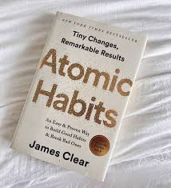
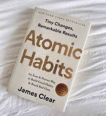

Background
Hi! I'm Shyam, a passionate guy with a deep interest in technology and innovation. Ever since I was a child, I've been fascinated by computers and how they work.To follow this passion I'm pursuing BTECH CSE in Mandsaur University.
Education
I completed my 10th grade with a score of 95%, and in my 12th grade, I secured 84%. Throughout my academic journey, I've developed a strong foundation in subjects like Mathematics, Physics, and Computer Science, which fuel my interest in Technology. I am learnng programming languages like C and Python and alongside web development, I have keen enthusiasm to learn more about.
Interests
When I'm not Working, I often find me reading books—my favorite being "Atomic Habits" by James Clear. I also enjoy playing cricket and badminton to keep myself active. In addition, I have a strong desire to learn new languages, which is why I have picked up Spanish alongside my fluency in English and Hindi.

 
